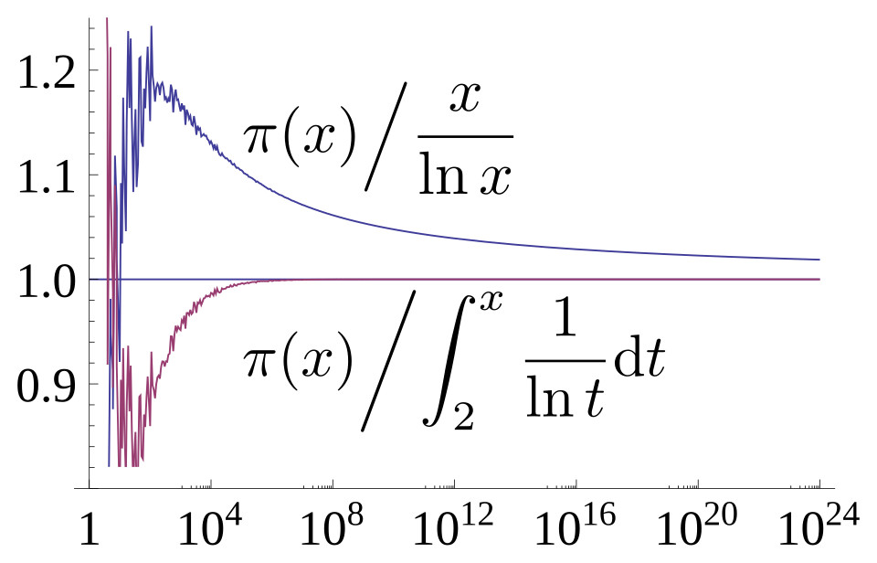
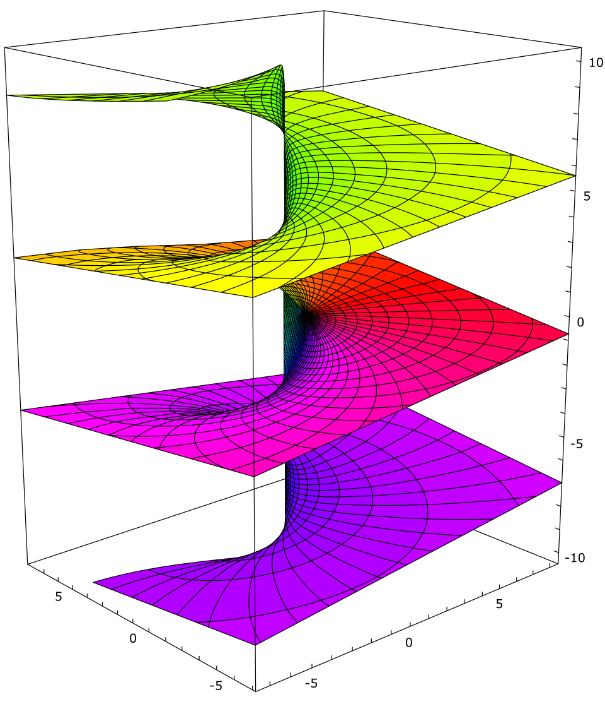

The elementary definition of a logarithm, "the power to which the base must be raised", presupposes that we already know what bˣ means for an arbitrary real exponent x. For rational x this is algebra, but for x = √2 or x = π it requires a limiting process, and the cleanest way to supply that process runs in the opposite direction: define the natural logarithm first, as an integral, and obtain the exponential function as its inverse. This course takes that route and then follows the logarithm wherever it leads, which turns out to be almost everywhere in mathematics.
The logarithm is, at heart, a single structural fact: the positive reals under multiplication and the reals under addition are isomorphic as topological groups, and the isomorphism is unique up to a scalar. Every "log law" is a restatement of this fact. The same idea, transplanted to the punctured complex plane, produces a multi-valued function whose failure to be single-valued is measured by the integer winding number, the seed of the argument principle and of covering-space theory. Transplanted to a finite cyclic group, it produces the discrete logarithm, a function that is trivially well defined but apparently very hard to compute, and on whose difficulty a large part of public-key cryptography rests.
The logarithm is also the natural measure of size for multiplicative phenomena. It counts digits, measures information in bits and nats, sets the scale for decibels and stellar magnitudes, and governs the distribution of prime numbers: the density of primes near x is 1/ln x, which is the content of the prime number theorem. The constant γ = lim (Hₙ − ln n) records the discrepancy between the discrete sum ∑ 1/k and the integral ∫ dt/t, and Benford's law explains why the leading digits of real-world data are logarithmically, not uniformly, distributed.
We assume a working knowledge of real analysis (the Riemann integral, uniform convergence, the mean value theorem), basic complex analysis (holomorphic functions, contour integrals) and elementary group theory. Proofs are given in full except where a result, such as the prime number theorem itself, needs machinery beyond the scope of the course; in those cases we prove the strongest elementary statement available and state the rest precisely.
In this course, you will:
- 1.Define ln x = ∫₁ˣ dt/t and derive every property of the logarithm and of exp, e and real powers from this definition alone.
- 2.Prove that the continuous homomorphisms (ℝ₊, ×) → (ℝ, +) are exactly the maps c·ln x, and understand change of base as a change of scalar.
- 3.Establish the sharp inequalities and growth rates of ln, including ln x = o(xᵋ) and Stirling's estimate for ln n!.
- 4.Derive the power series of ln(1 + x), determine its exact domain of convergence, and accelerate it to compute logarithms efficiently.
- 5.Use logarithmic differentiation and logarithmic derivatives, including p′/p for polynomials and products.
- 6.Construct the complex logarithm, its branches and branch cuts, the principal value Log z, and complex powers.
- 7.Prove that Hₙ − ln n converges to Euler's constant γ, and that ∑ 1/p diverges like ln ln x.
- 8.State the prime number theorem precisely, prove Chebyshev's bounds, and compare x/ln x with li(x).
- 9.Treat entropy, bits, decibels and other logarithmic scales rigorously, including Gibbs' inequality and the characterisation of log by additivity.
- 10.Explain Benford's law through equidistribution modulo 1.
- 11.Study the discrete logarithm problem, the Diffie–Hellman protocol, and the algorithms that attack it.
Figures


Contents
The Natural Logarithm as an Integral Lesson 2
The Exponential Function, e, and Real Powers Lesson 3
The Logarithm as a Group Isomorphism Lesson 4
Inequalities, Growth Rates and Stirling's Estimate Lesson 5
The Series for ln(1 + x) and the Computation of Logarithms Lesson 6
Logarithmic Differentiation and the Logarithmic Derivative Lesson 7
The Complex Logarithm Lesson 8
Logarithms in Integration Lesson 9
Harmonic Numbers, Euler's Constant and the Primes Lesson 10
The Prime Number Theorem Lesson 11
Information, Entropy and Logarithmic Scales Lesson 12
Benford's Law Lesson 13
Discrete Logarithms and Cryptography Problem Set
60 problems Assessment
Randomly generated questions
Image sources
- Figure 1 · Prime number theorem ratio convergence. By Dcoetzee. CC0. From Wikimedia Commons: https://commons.wikimedia.org/wiki/File:Prime_number_theorem_ratio_convergence.svg
- Figure 2 · Riemann surface log. By Leonid 2. CC BY-SA 3.0. From Wikimedia Commons: https://commons.wikimedia.org/wiki/File:Riemann_surface_log.svg